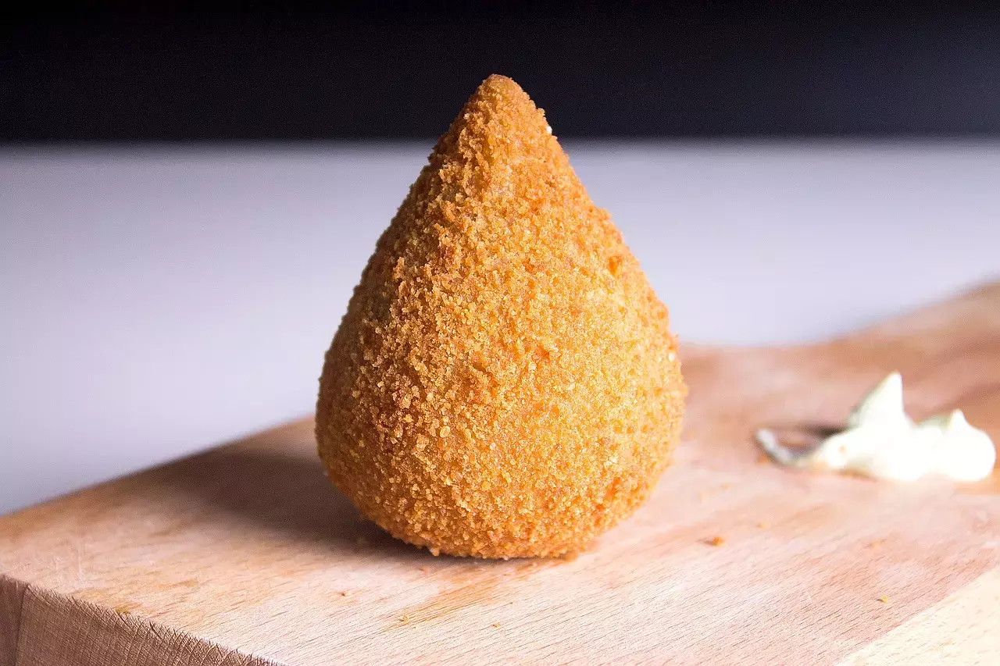

Coxinha de galinha: uma paixão nacional!
Coxinha
Ingredientes:
1 - 4 xícaras de trigo;
2 - 4 xícaras de leite;
3 - 1 caldo de galinha;
4 - 1/2 colher de margarina.
Modo de preparo:
1 - Leve ao fogo o leite, a margarina e o caldo;
2 - Deixe ferver;
3 - Despeje de uma só vez o trigo e mexa bem;
4 - Depois retire da panela e coloque sobre a mesa;
5 - Sove um pouco e comece a modelar as coxinhas;
6 - Coloque para fritar em óleo quente, espere dourar, retire e sirva.